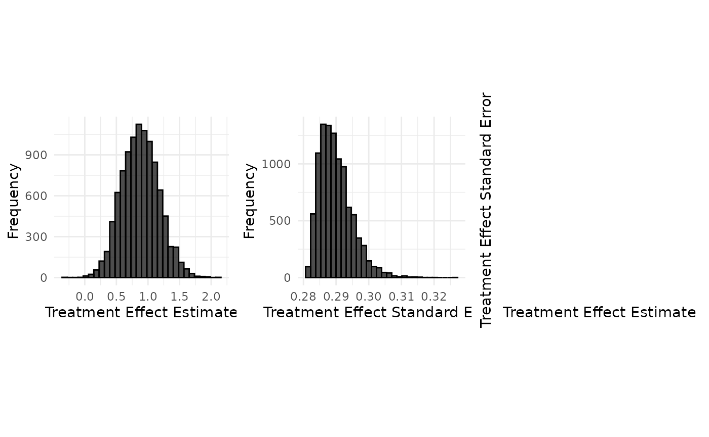
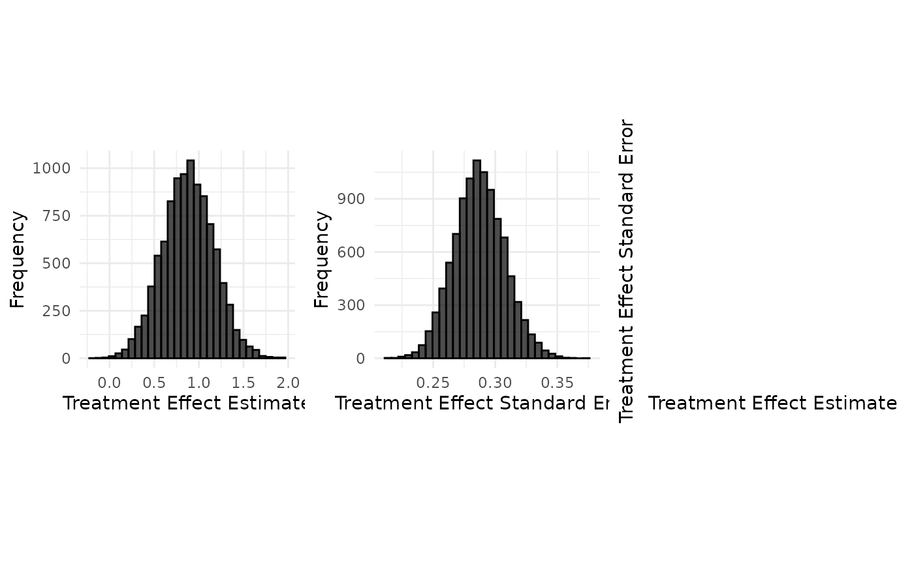

Data Generation : Belimumab case study (binary endpoint)
Tristan Fauvel, Quinten Health
2026-09-11
Source:vignettes/data_generation/Data_generation_belimumab.Rmd
Data_generation_belimumab.RmdBelimumab case study
set.seed(42)
case_study_config <- yaml::yaml.load_file(system.file("conf/case_studies/belimumab.yml", package = "RBExT"))
format_case_study_config(case_study_config)| Parameter | Value |
|---|---|
| General | |
| Name | Belimumab |
| Control | Placebo |
| Summary Measure Likelihood | normal |
| Theta 0 | 0 |
| Endpoint | binary |
| Null Space | left |
| Sampling Approximation | FALSE |
| Target | |
| Target Control | 39 |
| Target Treatment | 53 |
| Target Total | 92 |
| Target Responses (Control) | 17 |
| Target Responses (Treatment) | 28 |
| Target Treatment Effect | 0.371157794609103 |
| Target Standard Error | 0.424255065474292 |
| Source | |
| Source Control | 562 |
| Source Treatment | 563 |
| Source Total | 1125 |
| Source Responses (Control) | 218 |
| Source Responses (Treatment) | 285 |
| Source Treatment Effect | 0.481014661162323 |
| Source Standard Error | 0.120830571212221 |
Initializing a BinaryTargetData object with a normal treatment effect summary measure distribution
source_data <- SourceData$new(case_study_config)
drift <- 0.4
target_sample_size_per_arm <- 100We start by computing the rate in each arm, based on the drift in each arm (defined on the log scale). By default, the drift in the control arm is 0.
read_function_code(rate_from_drift_logOR)## rate_from_drift_logOR <- function (arm_drift, source_rate)
## {
## source_odds <- source_rate/(1 - source_rate)
## exp_arm_drift <- exp(arm_drift)
## p_target <- exp_arm_drift/(exp_arm_drift + 1/source_odds)
## if (exp_arm_drift == Inf && source_odds != 0) {
## p_target <- 1
## }
## return(p_target)
## }
control_drift <- 0
treatment_drift <- drift + control_drift
target_data <- BinaryTargetData$new(
source_data = source_data,
sampling_approximation = case_study_config$sampling_approximation,
target_sample_size_per_arm = target_sample_size_per_arm,
control_drift = control_drift,
treatment_drift = treatment_drift,
summary_measure_likelihood = case_study_config$summary_measure_likelihood
)
# Recompute the rates via the log odds ratio drift, for illustration.
target_data$control_rate <- rate_from_drift_logOR(control_drift, source_data$control_rate)
target_data$treatment_rate <- rate_from_drift_logOR(treatment_drift, source_data$treatment_rate)Computing the mean and standard deviation of the logOR distribution
This allows us to compute the sampling standard deviation of the log OR:
read_function_code(standard_error_log_odds_ratio)## standard_error_log_odds_ratio <- function (n_control_nonresponders, n_treatment_nonresponders,
## n_control_responders, n_treatment_responders, continuity_correction = TRUE)
## {
## if (continuity_correction == TRUE) {
## n_control_responders <- 0.5 + n_control_responders
## n_treatment_responders <- 0.5 + n_treatment_responders
## n_control_nonresponders <- 0.5 + n_control_nonresponders
## n_treatment_nonresponders <- 0.5 + n_treatment_nonresponders
## }
## return(sqrt(1/n_control_nonresponders + 1/n_treatment_nonresponders +
## 1/n_control_responders + 1/n_treatment_responders))
## }Computing the mean the logOR distribution:
target_data$treatment_effect <- target_data$drift + source_data$treatment_effect_estimateAggregate data generation
Generation of aggregate data without sampling approximation
Usage
case_study_config$sampling_approximation <- FALSE
target_data <- TargetDataFactory$new()
target_data <- target_data$create(source_data = source_data, case_study_config = case_study_config, target_sample_size_per_arm = target_sample_size_per_arm, treatment_drift = drift, summary_measure_likelihood = source_data$summary_measure_likelihood)
n_replicates <- 10000
data <- target_data$generate(n_replicates = n_replicates)
print(data[1:10,])## treatment_effect_estimate treatment_effect_standard_error
## 1 0.3577034 0.2826928
## 2 0.6831790 0.2863041
## 3 0.6814880 0.2859154
## 4 0.3206737 0.2837651
## 5 0.2015345 0.2841780
## 6 1.0112073 0.2904974
## 7 0.5219859 0.2850312
## 8 0.6393069 0.2851016
## 9 0.8992529 0.2909667
## 10 0.9690166 0.2897379
## sample_size_per_arm standard_deviation
## 1 100 2.826928
## 2 100 2.863041
## 3 100 2.859154
## 4 100 2.837651
## 5 100 2.841780
## 6 100 2.904974
## 7 100 2.850312
## 8 100 2.851016
## 9 100 2.909667
## 10 100 2.897379
target_data$plot_sample(data)
Implementation details
read_function_code(compute_ORs)## compute_ORs <- function (n_control, n_treatment, n_control_responders, n_treatment_responders)
## {
## n_control_nonresponders <- n_control - n_control_responders
## n_treatment_nonresponders <- n_treatment - n_treatment_responders
## log_odds_ratio <- compute_log_odds_ratio_from_counts(n_control_responders,
## n_treatment_responders, n_control - n_control_responders,
## n_treatment - n_treatment_responders, continuity_correction = TRUE)
## std_err_log_odds_ratio <- standard_error_log_odds_ratio(n_control -
## n_control_responders, n_treatment - n_treatment_responders,
## n_control_responders, n_treatment_responders, continuity_correction = TRUE)
## odds_ratio_dict <- list(log_odds_ratio = log_odds_ratio,
## treatment_rate = n_treatment_responders/n_treatment,
## control_rate = n_control_responders/n_control, std_err_log_odds_ratio = std_err_log_odds_ratio)
## return(odds_ratio_dict)
## }
read_function_code(sample_log_odds_ratios)## sample_log_odds_ratios <- function (n_control, n_treatment, treatment_rate, control_rate,
## n_replicates)
## {
## n_treatment_responders <- rbinom(n_replicates, n_treatment,
## treatment_rate)
## n_control_responders <- rbinom(n_replicates, n_control, control_rate)
## return(compute_ORs(n_control, n_treatment, n_control_responders,
## n_treatment_responders))
## }
log_OR_samples <- sample_log_odds_ratios(
target_data$sample_size_control,
target_data$sample_size_treatment,
target_data$treatment_rate,
target_data$control_rate,
n_replicates
)
samples <- data.frame(
treatment_effect_estimate = log_OR_samples$log_odds_ratio,
treatment_effect_standard_error = log_OR_samples$std_err_log_odds_ratio,
sample_size_per_arm = target_data$sample_size_per_arm
)Generation of aggregate data using a Gaussian approximation.
Usage
case_study_config$sampling_approximation <- TRUE
target_data <- TargetDataFactory$new()
target_data <- target_data$create(source_data = source_data, case_study_config = case_study_config, target_sample_size_per_arm = target_sample_size_per_arm, treatment_drift = drift, summary_measure_likelihood = source_data$summary_measure_likelihood)
n_replicates <- 10000
data <- target_data$generate(n_replicates = n_replicates)
print(data[1:10,])## treatment_effect_estimate treatment_effect_standard_error
## 1 0.4833732 0.2747903
## 2 1.3913941 0.3028210
## 3 1.0131897 0.2639542
## 4 1.2333501 0.2750998
## 5 1.2599497 0.2879706
## 6 0.9392297 0.2968109
## 7 0.4803110 0.2694182
## 8 0.1331954 0.2635918
## 9 1.0283824 0.3136427
## 10 0.8584278 0.2578315
## sample_size_per_arm standard_deviation
## 1 100 2.747903
## 2 100 3.028210
## 3 100 2.639542
## 4 100 2.750998
## 5 100 2.879706
## 6 100 2.968109
## 7 100 2.694182
## 8 100 2.635918
## 9 100 3.136427
## 10 100 2.578315
target_data$plot_sample(data)
Notice how the sampling approximation leads to a similar distribution of the treament effect estimate, but to a very different distribution of the treatment effect standard error.
Implementation details
read_function_code(sample_aggregate_normal_data)## sample_aggregate_normal_data <- function (mean, variance, n_replicates, n_samples_per_arm)
## {
## sample_mean <- rnorm(n_replicates, mean = mean, sd = sqrt(variance/n_samples_per_arm))
## if (n_samples_per_arm > 1) {
## degrees_of_freedom <- n_samples_per_arm - 1
## sample_variance <- variance * rchisq(n_replicates, df = degrees_of_freedom)/degrees_of_freedom
## }
## else {
## sample_variance <- rep(NA_real_, n_replicates)
## }
## sample_standard_error <- sqrt(sample_variance/n_samples_per_arm)
## samples <- data.frame(treatment_effect_estimate = sample_mean,
## treatment_effect_standard_error = sample_standard_error,
## sample_size_per_arm = n_samples_per_arm, standard_deviation = sqrt(sample_variance))
## return(samples)
## }See Data_generation_botox for details on aggregate normal data generation.